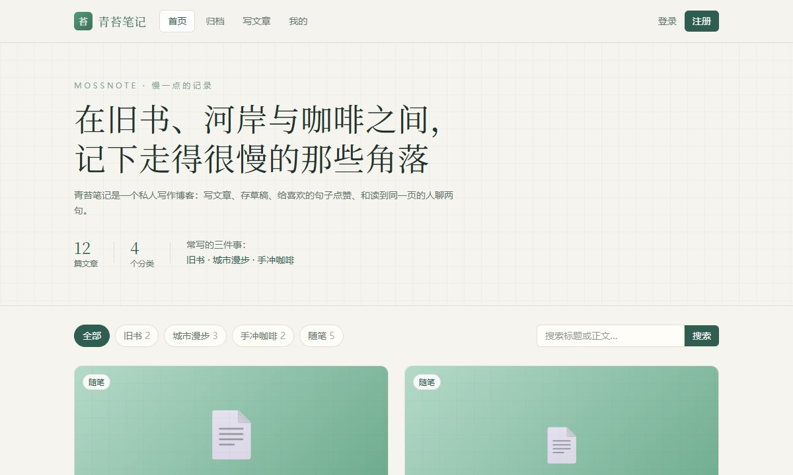
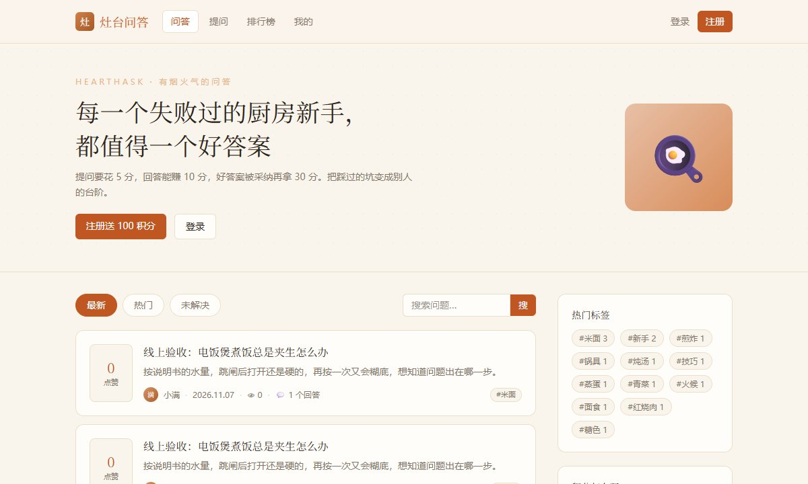
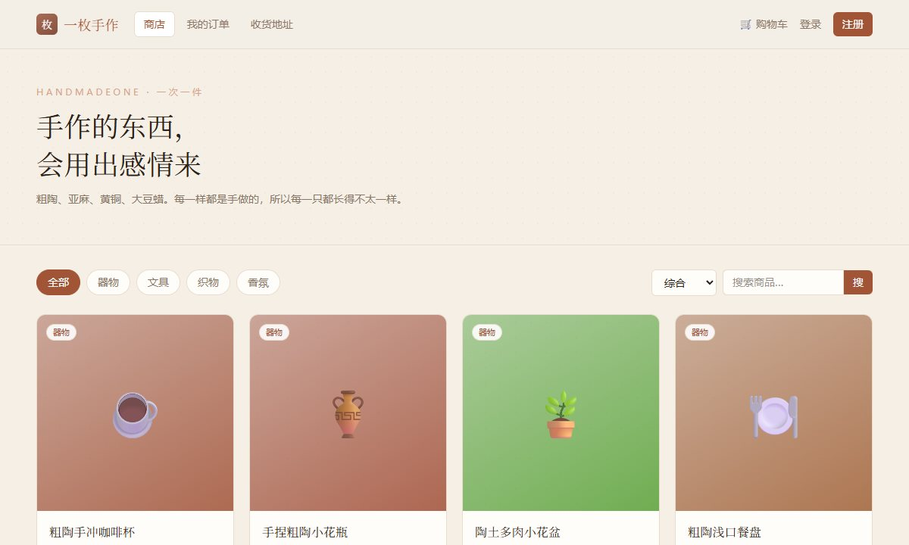

编程语言
会写小脚本、会建表和查询，能独立做出一个静态网站；复杂算法还在学。
01 / ABOUT
先简单认识一下。
我是林知远，数字经济专业大一在读。
专业课里最让我意外的是 Python 和 SQL：原来一堆看起来乱糟糟的数据，真的能被「问」出答案。微观经济学里那些关于选择和成本的说法，也常让我想到写代码时怎么取舍。
我不太会来事儿，但遇到一个跑不通的报错，能安安静静坐一下午；搞清楚原因的那一刻比什么都高兴。
周末一般在旧书店晃、在城市里乱走，或者回家给自己冲一杯手冲咖啡。下面这些网站，都是这学期一点点折腾出来的。
02 / EDUCATION
从高中到现在，一条简单的时间线。
2023.09 — 2026.06
数学和信息技术课最合胃口，第一次用 Excel 把一班成绩做成图表时，觉得「表格」其实也能讲故事。毕业前开始自己照着教程写 Python 小脚本。
2026.09 — 至今
主修方向是数字经济基础与数据分析入门。印象深的课有微观经济学、Python 程序设计、SQL 数据库基础和微积分：一门讲清「为什么这样选」，三门负责「怎么把事做出来」。
课余按「数据库设计 → 写 PRD → 后端 → 前端」的流程，完整做完并上线了三个全栈练习项目（见下方成果板块）。
03 / SKILLS
按真实水平写，不吹；旁边的浅色小字是目前的熟练度。
会写小脚本、会建表和查询，能独立做出一个静态网站；复杂算法还在学。
作业、文档和数据整理基本都在这几个工具里完成。
喜欢把做过的东西写清楚，方便自己回头看，也方便别人看懂。
04 / PROJECTS · 重点
这一块最花时间：下面每个作品都能在线点开使用，含 6 个独立上线的网页成果和 3 个完整全栈项目；最后三个项目配有线上真实界面截图。
蔬菜百科、营养查询与「食物相克」对照，一站搞定。
输入城市就能看实时天气和多日预报，也支持自动定位。
一个能自定义时长的专注计时器，带通知和统计。
本地优先的 Markdown 笔记本，边写边看渲染结果。
带优先级和完成率统计的待办清单。
极简编辑感的个人主页，按「经历 / 作品 / 分享」组织内容。

一个安静的写作空间，主题是旧书、城市漫步和手冲咖啡。

新手下厨互助社区，用积分把「问」和「答」串起来。

独立手作器物小店，从加购到支付是一条完整链路。
每个项目都先写 database.md 和 PRD.md，再写后端与前端；登录用 JWT + bcrypt，配置放 .env；下单、积分这类操作放在数据库事务里。三个全栈项目各自独立的数据库和用户体系，互不干扰。
05 / HOBBIES
不写代码的时候，大概在做这些事。
周末泡旧书店，喜欢扉页上陌生人留下的字迹。
不设目的地，沿着河岸和老街一直走下去。
慢慢磨豆、慢慢注水，算是给自己的一点耐心训练。
把一个报错查明白，或者把小想法做成能点开的网页。
06 / CONTACT
欢迎老师批评指正，也欢迎一起交流。